अध्याय 9: Adjective — कैसा है¶
Adjective (विशेषण) — कैसा है, कितना है, कौन सा है
Adjective वो शब्द है जो noun के बारे में कुछ बताता है — कैसा, कितना, कौन सा, किसका। सिर्फ़ एक adjective बदलने से पूरा वाक्य बदल जाता है: a house और a beautiful old wooden house में ज़मीन-आसमान का फ़र्क है। इस chapter का सबसे क़ीमती हिस्सा आख़िर में है — adjectives का क्रम, वो नियम जो native लोग नाम से नहीं जानते, पर कभी तोड़ते भी नहीं।
एक लाइन में
An adjective describes or limits a noun or pronoun. जो noun के बारे में बताए — कैसा, कितना, कौन सा — वो adjective है।
- She has a sharp memory. "sharp" बता रहा है कि memory कैसी है।
- Three boys were waiting outside. "three" बता रहा है कितने — ये भी adjective है।
- The tea is cold. Adjective noun के बाद भी आ सकता है — linking verb के ज़रिए।
9.1 Adjective कहाँ बैठता है — दो जगह¶
| जगह | नाम | Example |
|---|---|---|
| Noun से पहले | Attributive | a heavy bag · an honest man |
| Linking verb के बाद | Predicative | The bag is heavy. · He seems honest. |
कुछ adjectives सिर्फ़ एक ही जगह चलते हैं
asleep, alive, awake, afraid, alone, ill — ये सिर्फ़ verb के बाद आते हैं।
✓ The baby is asleep. ✗ an asleep baby (इसके लिए "a sleeping baby" बोलो)।
दूसरी तरफ़ main, mere, elder, former सिर्फ़ noun से पहले आते हैं — the main road, पर "The road is main" ग़लत है।
9.2 Adjective के प्रकार¶
| प्रकार | क्या बताता है | Examples |
|---|---|---|
| Quality | कैसा है | a clever boy, tall building, red cloth |
| Quantity | कितना (बिना गिनती) | some water, much noise, enough time |
| Number | कितने (गिनती में) | five books, second chance, many people |
| Demonstrative | कौन सा — इशारा | this pen, those chairs |
| Possessive | किसका | my bag, their house |
| Interrogative | सवाल | Which shirt? Whose turn? |
| Distributive | अलग-अलग | each student, every day, neither option |
| Proper | ख़ास नाम से बना | Mughal architecture, Bengali sweets |
| Emphasizing | ज़ोर देना | with my own eyes, the very thing |
| Article | ख़ास या आम | a boy, an apple, the boy |
Emphasizing adjective — "own" और "very"¶
ये adjective noun के बारे में कोई नई जानकारी नहीं देता — बस उस पर ज़ोर देता है। हिंदी के "अपनी ही", "ख़ुद की", "वही" वाला भाव।
- I saw it with my own eyes. मैंने अपनी ख़ुद की आँखों से देखा — किसी से सुना नहीं।
- This is the very thing I was looking for. बिल्कुल वही चीज़ जो मैं ढूँढ रहा था।
- She runs her own business. उसका अपना business — किसी और का नहीं।
'very' — adjective या adverb?
the very man — noun से पहले, "the" के बाद → adjective (वही आदमी)।
very tall — adjective से पहले → adverb (बहुत लंबा)। "own" हमेशा possessive के बाद आता है: my own, his own, their own — "a own house" नहीं।
Quick guide — कौन सा प्रकार किस सवाल का जवाब¶
| Type | काम / सवाल | Example |
|---|---|---|
| Quality | What kind? (कैसा?) | a kind man |
| Quantity | How much? (कितना?) | some milk |
| Number | How many? / Which order? (कितने, कौन सा नंबर?) | three pens, the first boy |
| Demonstrative | Which one? (कौन सा — इशारा) | that house |
| Possessive | Whose? (किसका?) | our teacher |
| Interrogative | Used in questions (सवाल में) | Which bus? |
| Distributive | One at a time (एक-एक करके) | every child |
| Proper | From a proper noun (ख़ास नाम से) | Indian tea |
| Emphasizing | Gives emphasis (ज़ोर देता है) | my own eyes |
many / much और few / little — यहाँ गड़बड़ होती है
| Countable | Uncountable | |
|---|---|---|
| बहुत | many books | much water |
| थोड़ा (कम, negative feel) | few friends | little money |
| थोड़ा (काफ़ी, positive feel) | a few friends | a little money |
"few friends" = बहुत कम दोस्त (दुख की बात)। "a few friends" = कुछ दोस्त हैं (ठीक है)। सिर्फ़ एक "a" से पूरा भाव पलट जाता है।
9.3 Degrees of comparison — तीन सीढ़ियाँ¶
जब दो या ज़्यादा चीज़ों की तुलना करनी हो, तो adjective अपना रूप बदलता है। तीन सीढ़ियाँ हैं: positive → comparative → superlative।
| कैसे बनता है | Positive | Comparative | Superlative |
|---|---|---|---|
| छोटे शब्द: + er / est | tall | taller | tallest |
| -e पर ख़त्म: + r / st | large | larger | largest |
| consonant + y: y → ier / iest | happy | happier | happiest |
| एक vowel + एक consonant: अक्षर double | big | bigger | biggest |
| लंबे शब्द: more / most | beautiful | more beautiful | most beautiful |
| बिल्कुल अलग (irregular) | good | better | best |
Irregular comparisons — याद करने वाले¶
| Positive | Comparative | Superlative | ध्यान दो |
|---|---|---|---|
| good | better | best | — |
| bad | worse | worst | — |
| little | less | least | uncountable के लिए |
| many / much | more | most | — |
| far | farther / further | farthest / furthest | farther = दूरी, further = और ज़्यादा |
| late | later / latter | latest / last | latest = सबसे नया, last = आख़िरी |
| old | older / elder | oldest / eldest | elder सिर्फ़ परिवार में |
Comparative और superlative के साथ क्या लगता है
Comparative के साथ than — She is taller than her brother.
Superlative के साथ the — She is the tallest in the class. दो की तुलना में comparative, तीन या ज़्यादा में superlative।
Double comparative — सबसे पहचानी हुई ग़लती
- गलत: He is more taller than me.
- सही: He is taller than I am.
-
क्यों: "taller" में -er पहले से comparative बना चुका है — उसके आगे "more" लगाना दोहराव है। एक adjective पर एक ही बार comparison लगता है: या -er, या more। हिंदी में "ज़्यादा लंबा" बोलते हैं, इसलिए "more" घुस जाता है।
-
गलत: She is the most cleverest girl.
- सही: She is the cleverest girl.
- क्यों: वही ग़लती superlative में — "cleverest" के आगे "most" फ़ालतू है।
ये adjectives compare होते ही नहीं
perfect, unique, complete, dead, round, square, impossible, full, empty — ये absolute हैं। "More perfect", "very unique" technically ग़लत है, क्योंकि perfect से आगे कुछ होता ही नहीं।
9.4 Adjectives का क्रम — chapter का सबसे क़ीमती हिस्सा¶
जब एक noun के साथ दो-तीन adjectives आते हैं, तो उनका एक पक्का क्रम होता है। हम लोग अक्सर इस क्रम को तोड़ देते हैं, और फिर वाक्य grammar में सही होने के बाद भी "अजीब" लगता है। Native speaker को नियम याद नहीं होता — कान याद रखता है। हम नियम से शुरू करेंगे, कान बाद में बन जाएगा।

| # | श्रेणी | सवाल | Examples |
|---|---|---|---|
| 1 | Opinion | मुझे कैसा लगता है? | lovely, ugly, boring, delicious |
| 2 | Size | कितना बड़ा? | big, small, tall, long |
| 3 | Age | कितना पुराना? | old, new, young, ancient |
| 4 | Shape | किस आकार का? | round, square, flat |
| 5 | Colour | कौन सा रंग? | red, black, golden |
| 6 | Origin | कहाँ का? | Indian, Chinese, Punjabi |
| 7 | Material | किस चीज़ का बना? | wooden, silk, steel, plastic |
| 8 | Purpose | किस काम के लिए? | writing (desk), sleeping (bag) |
क्रम तोड़ने से बनने वाली ग़लतियाँ
- गलत: a red big balloon
- सही: a big red balloon
-
क्यों: Size (2) colour (5) से पहले आता है। डिब्बे का नंबर याद रखो।
-
गलत: a cotton white shirt
- सही: a white cotton shirt
-
क्यों: Material (7) noun के सबसे पास बैठता है, colour (5) उससे पहले।
-
गलत: an old beautiful temple
- सही: a beautiful old temple
-
क्यों: Opinion (1) सबसे दूर बैठता है, age (3) उसके बाद।
-
गलत: a steel small Japanese watch
- सही: a small Japanese steel watch
- क्यों: तीनों उलट गए थे। सही क्रम: size (2) → origin (6) → material (7)। आँख बंद करके सोचो — train के डिब्बे किस नंबर पर हैं।
तीन से ज़्यादा मत लगाओ
नियम आठ का है, पर असली English में दो-तीन adjectives से ज़्यादा बहुत कम आते हैं। ज़्यादा लगाने से वाक्य भारी लगता है। चार चाहिए तो comma या "and" use करो, या वाक्य तोड़ दो।
9.5 Adjective से Adverb — कब -ly लगता है¶
Adjective noun के साथ, adverb verb के साथ। ज़्यादातर adjectives में -ly लगाने से adverb बन जाता है।
| Adjective | Adverb | Noun के साथ | Verb के साथ |
|---|---|---|---|
| careful | carefully | a careful driver | drives carefully |
| quick | quickly | a quick answer | answered quickly |
| happy | happily | a happy child | played happily |
| good | well | good English | speaks well |
| fast | fast | a fast car | runs fast |
| hard | hard | hard work | works hard |
good और well
✓ Her English is good. (noun के बारे में)
✓ She speaks English well. (verb के बारे में)
✗ She speaks English good. "good" adjective है, "well" adverb — ये जोड़ी हमेशा याद रखो।
9.6 वो ग़लतियाँ जो हम सच में करते हैं¶
Adjective की आम Indian-English ग़लतियाँ
- गलत: My brother is more taller than me.
- सही: My brother is taller than I am.
-
क्यों: एक adjective पर एक ही comparison — या -er, या more। हिंदी में "ज़्यादा लंबा" बोलते हैं, इसलिए English में दोनों लग जाते हैं।
-
गलत: She is senior than me.
- सही: She is senior to me.
-
क्यों: कुछ adjectives — senior, junior, superior, inferior, prior, preferable — "than" के बजाय to लेते हैं, क्योंकि ये Latin से आए हैं।
-
गलत: This is the most best option.
- सही: This is the best option.
-
क्यों: "Best" ख़ुद ही superlative है — उससे आगे कुछ नहीं होता। इसी तरह "most worst", "more better" भी ग़लत हैं।
-
गलत: She speaks very good English… and she speaks English good.
- सही: She speaks very good English… and she speaks English well.
-
क्यों: पहला ठीक है (good + noun English)। दूसरे में verb है, इसलिए adverb चाहिए — well।
-
गलत: He bought a new nice phone.
- सही: He bought a nice new phone.
-
क्यों: Opinion (nice) age (new) से पहले आता है। दोनों उलट जाने पर वाक्य ग़लत नहीं लगता, पर native कान को तुरंत चुभता है।
-
गलत: I have less friends in this city.
- सही: I have fewer friends in this city.
-
क्यों: गिने जा सकने वाले noun के साथ "fewer", और uncountable के साथ "less" — less water, fewer bottles।
-
गलत: My all books are new.
- सही: All my books are new.
-
क्यों: "All, both, half" possessive से पहले आते हैं — all my, both your, half his। हिंदी का "मेरी सारी" उलटा उतर आता है।
-
गलत: She is my elder than me.
- सही: She is older than me. / She is my elder sister.
- क्यों: "Elder" सिर्फ़ noun से पहले, परिवार में — elder brother, elder sister। तुलना करनी हो तो "older than" बोलो।
9.7 छोटा नक्शा¶
चार चीज़ें याद रखो
1. Adjective noun को बताता है; verb को adverb बताता है।
2. एक adjective पर एक ही comparison — या -er, या more।
3. Comparative के साथ than, superlative के साथ the।
4. कई adjectives हों तो क्रम: opinion सबसे दूर, material सबसे पास।
9.8 Practice — Adjectives¶
अभ्यास 1
कौन सा क्रम सही है?
- a beautiful big old house
- a big beautiful old house
- an old big beautiful house
- a big old beautiful house
संकेत: Opinion कहाँ बैठता है, size कहाँ?
उत्तर
a beautiful big old house
क्रम है opinion (beautiful) → size (big) → age (old)। Opinion सबसे दूर बैठता है क्योंकि वो सबसे ज़्यादा मेरा अपना फ़ैसला है, और बाक़ी तथ्य हैं।
अभ्यास 2
She is ___ than her sister.
- taller
- more taller
- tallest
- more tall
संकेत: एक adjective पर कितने comparison?
उत्तर
taller
'taller' में -er पहले से comparison बना चुका है, इसलिए 'more' लगाना दोहराव हो जाता है। छोटे adjectives में -er लगता है, more नहीं।
अभ्यास 3
He is ___ to me in the office.
- senior
- more senior than
- seniorer
- most senior
संकेत: कुछ adjectives 'than' नहीं लेते।
उत्तर
senior
Senior, junior, superior, inferior — ये Latin से आए हैं और 'to' लेते हैं, 'than' नहीं। इसलिए 'senior to me' सही है।
अभ्यास 4
I have ___ books than you.
- fewer
- less
- lesser
- little
संकेत: Books गिनी जा सकती हैं।
उत्तर
fewer
Countable noun के साथ 'fewer' लगता है और uncountable के साथ 'less' — fewer books, less water। Books गिन सकते हैं, इसलिए fewer।
अभ्यास 5
She sings very ___. (adverb form of 'good')
संकेत: Verb के बारे में बताना है, noun के नहीं।
उत्तर
well
'sings' verb है, और verb के बारे में बताने वाला शब्द adverb होता है। 'good' का adverb 'well' है — इसलिए 'sings well'।
अभ्यास 6
This is the ___ day of my life. (superlative of 'happy')
संकेत: consonant + y पर ख़त्म होने वाले शब्द का नियम।
उत्तर
happiest
Consonant के बाद -y आए तो y हटकर -iest लगता है: happy → happiest। 'most happy' बोलना ग़लत नहीं पर भारी लगता है।
अभ्यास 7
इस वाक्य में क्रम ग़लत है — ग़लत जगह वाले शब्द पर tap करो।
He wore a cotton white kurta to the wedding.
उत्तर
गलत शब्द: cotton.
सही रूप: He wore a white cotton kurta to the wedding.
Material (cotton) noun के सबसे पास बैठता है और colour (white) उससे पहले आता है। दोनों उलट गए थे।
अभ्यास 8
ग़लत शब्द ढूँढो।
This phone is more cheaper than that one.
उत्तर
गलत शब्द: more.
सही रूप: This phone is cheaper than that one.
'cheaper' पहले से comparative है, इसलिए 'more' फ़ालतू हो गया। हिंदी के 'ज़्यादा सस्ता' से ये आदत आती है।
अभ्यास 9
एक शब्द ग़लत जगह पर है।
My all relatives came for the function.
उत्तर
गलत शब्द: all.
सही रूप: All my relatives came for the function.
'all' possessive से पहले आता है — all my, all your, all his। हिंदी का 'मेरे सारे' सीधा उतारने से क्रम उलट जाता है।
अभ्यास 10
'I saw the accident with my own eyes.' — यहाँ 'own' किस प्रकार का adjective है?
- Emphasizing
- Possessive
- Quality
- Distributive
संकेत: ये कोई नई जानकारी नहीं, सिर्फ़ ज़ोर दे रहा है।
उत्तर
Emphasizing
'own' और 'the very' noun पर ज़ोर देते हैं — Emphasizing adjectives। 'my' possessive है, पर 'own' उसके ऊपर ज़ोर जोड़ता है।
अभ्यास 11
This is the ___ book I wanted! (बिल्कुल वही)
संकेत: 'the' के बाद ज़ोर देने वाला शब्द।
उत्तर
very
'the very + noun' = बिल्कुल वही चीज़। यहाँ 'very' adjective है, क्योंकि noun (book) के बारे में बता रहा है।
अभ्यास 12
Adjective के प्रकार को उसके सवाल से जोड़ो।
| A | B |
|---|---|
| Quality | Whose? |
| Quantity | One at a time |
| Possessive | Which one? |
| Distributive | What kind? |
| Demonstrative | How much? |
उत्तर
Quality — What kind?; Quantity — How much?; Possessive — Whose?; Distributive — One at a time; Demonstrative — Which one?
हर प्रकार एक सवाल का जवाब है — कैसा (quality), कितना (quantity), किसका (possessive), एक-एक करके (distributive), कौन सा इशारे से (demonstrative)।
अभ्यास 13
Adjective को उसके क्रम-नंबर से जोड़ो।
| A | B |
|---|---|
| lovely | 3 — age |
| huge | 6 — origin |
| ancient | 7 — material |
| Japanese | 1 — opinion |
| wooden | 2 — size |
उत्तर
lovely — 1 — opinion; huge — 2 — size; ancient — 3 — age; Japanese — 6 — origin; wooden — 7 — material
जितना adjective मेरा अपना फ़ैसला है, उतना दूर बैठता है; जितना वो चीज़ का असली गुण है, उतना noun के पास। इसीलिए opinion पहले और material आख़िर में।
अभ्यास 14
Adjectives को सही क्रम में लगाओ।
शब्द: a / bought / round / table / wooden / She / small
उत्तर
She bought a small round wooden table
क्रम है size (small) → shape (round) → material (wooden) → noun (table)। Material हमेशा noun से चिपका रहता है।
अभ्यास 15
ये लाइन बोल के देखो — तीन adjectives एक साथ, बिना रुके।
उत्तर
बोलो: He has a beautiful old Indian painting
बोलते वक़्त adjectives के बीच कोई comma सुनाई नहीं देता, एक बहाव होता है। सही क्रम में बोलने पर ज़ुबान ख़ुद फिसलती है — ग़लत क्रम में अटकती है।
आगे क्या करो
आज घर की पाँच चीज़ें चुनो और हर एक को दो-तीन adjectives के साथ बोलो — "a small black plastic chair"। Train का क्रम पक्का हो जाएगा। अगला chapter Adverb — adjective का जोड़ीदार।